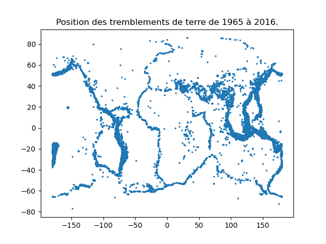

Contrôle 2
Science des données 2
L3 MIASHS, 27 novembre 2023
Tout document autorisé
Durée : 1h45
Modus operandi : l'énoncé est ci-dessous. Vous répondez dans ce document que vous m'envoyez au format pdf au plus tard à 15h55 (horaire strict). Vous m'envoyez également un fichier contenant le code python à exécuter pour résoudre les questions. Je dois pouvoir exécuter ce script sans erreur et les réponses aux questions doivent s'afficher de manière claire (affichage d'un message tel que : La réponse à la question 3 est : ...). Vous pouvez m'envoyer plusieurs emails successifs. Dans ce cas, seul le dernier (envoyé avant 15h55) sera pris en compte.
Ne pas oublier d'indiquer votre nom dans le compte-rendu et dans un commentaire au début du script python.
Énoncé
Nous allons étudier un jeu de données qui contient des informations concernant tous les tremblements de terre de magnitude supérieure ou égale à 5,5 qui se sont déroulés entre 1965 à 2016.
Ce fichier est disponible à l'url https://philippe-preux.github.io/ensg/miashs/datasets/earthquakes.csv.
Pour chaque séisme, le jeu de données indique :
- m, j, a, h, mn, s : 6 attributs : mois, jour, année, heure, minute, seconde de l'événement ;
- latitude et longitude ;
- le type de séisme ;
- la profondeur à laquelle le séisme s'est déroulé ;
- une erreur sur l'estimation de cette profondeur ;
- un attribut dont je ne connais pas la signification (Depth Seismic Stations) ;
- la magnitude du séisme ;
- le type de magnitude mesuré ;
- l'erreur sur cette magnitude ;
- deux attributs dont je ne connais pas la signification (Magnitude Seismic Stations et Azimuthal Gap) ;
- la distance horizontale à l'événement ;
- l'erreur sur cette distance ;
- un attribut dont je ne connais pas la signification (Root Mean Square) ;
- un numéro d'identification du séisme l'événement ;
- 4 attributs sans intérêt (Source, Location Source, Magnitude Source, Status) ;
- le pays où s'est déroulé le séisme.
Les questions :
- quelle(s) commande(s) effectuez-vous pour charger le jeu de données ? Indiquez-la/les dans le compte-rendu. Indiquez également le nombre de séismes recensés dans ce jeu de données.
- Les attributs Type, Magnitude Type et ID sont catégoriques. Faites-le nécessaire. Déterminez les différents types de tremblements de terre. Indiquez ce que vous faites pour répondre à ces questions dans votre compte-rendu.
- Ajouter un attribut dénommé DateHeure qui contient un « tampon temporel » calculé à partir des 6 premiers attributs. Indiquez comment vous faites dans le compte-rendu.
- Quelle commande effectuez-vous pour obtenir l'année où a eu lieu le plus grand nombre de séismes enregistrés dans ce jeu de données ? Indiquez cette année dans le compte-rendu. Indiquez aussi l'année où il y en a eu le moins et la valeur médiane du nombre de séismes par an.
- Comment vérifiez-vous si les données sont ordonnées chronologiquement dans le tableau de données ? Indiquez comment vous faites dans le compte-rendu.
- Quelle commande effectuez-vous pour connaître le nombre de tremblements de terre qui ont eu lieu dans chaque pays ? Indiquez cette commande dans le compte-rendu.
- Dans quel pays y a-t-il eu le plus grand nombre de tremblements de terre depuis 1965 ? Indiquez-le dans le compte-rendu.
- D'après vous, que signifie unknown dans l'attribut pays ? Indiquez votre réponse dans le compte-rendu.
- Dans combien de pays identifiés y a-t-il eu au moins 1 séisme depuis 1965 ? Indiquez-le dans le compte-rendu.
- Combien y a-t-il eu de tremblements de terre en France ? Indiquez ce nombre et les dates de ces tremblements de terre dans le compte-rendu.
- Faites un graphique du nombre de tremblements de terre par année. Insérez-le dans votre compte-rendu. Analysez ce graphique. Indiquez vos réflexions dans votre compte-rendu.
- Faites un graphique indiquant le nombre de séismes par pays.
Vous devez obtenir un graphique comme celui-ci :

- Faites un histogramme de la distribution de la magnitude des séismes (conseil : utilisez bins = 37). Vous insérez le graphique obtenu dans le compte-rendu et vous expliquez pourquoi 37 est la bonne valeur.
- Faites une représentation en échelles log-log de cette distribution. Que constatez-vous (ne tenez pas compte de la zone un peu bizarre vers le bas du graphique, s'il y en a une). Insérez ce graphique dans le compte-rendu et commentez-le.
- Y a-t-il une corrélation linéaire entre la magnitude d'un séisme et sa profondeur ? Dans votre compte-rendu, indiquez ce que vous faites pour mesurer cette corrélation et répondez à la question.
- Faites un graphique représentant la magnitude en fonction de la profondeur. Voyez-vous quelque chose ? Insérez ce graphique dans votre compte-rendu et commentez.
- Comment faites-vous pour réaliser un graphique indiquant la position (longitude, latitude) des tremblements de terre comme celui ci-dessous ? Vous indiquez la commande dans votre compte-rendu et insérez votre graphique.
 - Refaites ce graphique en indiquant en noir la position des tremblements de terre pour lesquels l'attribut pays vaut unknown. Qu'en pensez-vous ? Vous indiquez la commande dans votre compte-rendu, ainsi que vos pensées à la vue de ce graphique et vous insérez le graphique dans le compte-rendu.
- Faites un graphique indiquant la position des tremblements de terre d'origine naturelle en bleu, les tremblements de terre dont l'origine est une explosion nucléaire en rouge. Insérez cette figure dans votre compte-rendu.
- Vous utilisez le jeu de données sur les volcans étudié précédemment et vous réalisez un graphique indiquant les tremblements de terre par des points bleus et les éruptions volcaniques par des points rouges. Vous insérez le graphique dans le compte-rendu.